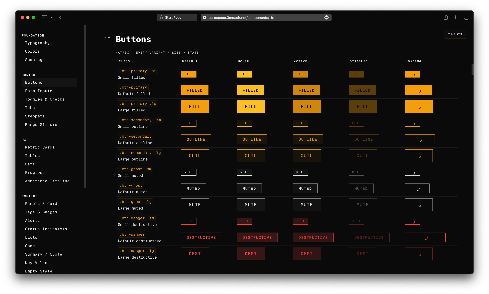

UI-kit for high-reliability and mission-critical applications: IoT, industrial SaaS, miltech. Single 62 KB CSS file, zero dependencies, amber on black. Clarity-first.

Every component below renders inline from the kit stylesheet. Nothing on this page is a screenshot. Class names are shown — this section doubles as documentation.
Everything on this page is a live kit component. The page is the documentation. The kit is the evidence.
<!DOCTYPE html>
<html>
<head>
<link rel="stylesheet" href="https://3mdash.net/aerospace-ui/style.css">
</head>
<body>
<button class="btn btn-primary">IT WORKS</button>
</body>
</html>Save as index.html. Open in a browser.
<div class="panel">
<div class="panel-header"><span>STATUS</span></div>
<div class="panel-body">
<button class="btn btn-primary">DEPLOY</button>
<button class="btn btn-ghost">INSPECT</button>
</div>
</div>No JavaScript required. Section 02 shows the full set, live.
There is no step three. No build, no dependencies, no initialization.
/* your stylesheet, after the kit */
:root { --accent: #3b82f6; }The kit is CSS custom properties all the way down. Override any token in your own stylesheet, after the link tag.
No external dependency: download style.css into your project and link it locally — <link rel="stylesheet" href="./aerospace.css">. You stop receiving monthly updates; you change when you choose.
THE PALETTE IS THE NAV. PRESS ⌘K — OR CTRL K — ANYWHERE ON THIS PAGE.
Jump to sections, copy the install snippet, toggle reduced motion, open the component reference. Fully keyboard-navigable.
DATA FIRST — the interface serves the data. Nothing else is on screen.
NO DECORATION — if an element carries no information, it is deleted.
BORDERS NOT SHADOWS — structure is drawn with one-pixel lines, never with blur.
MONO THROUGHOUT — one typeface for labels, values, and prose. Zero switching.